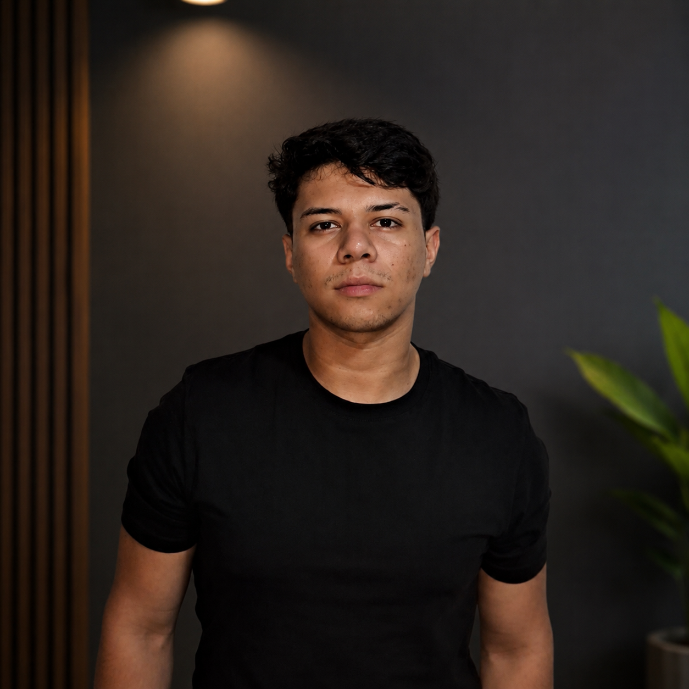

Luís Duarte
Desenvolvedor em formação
Sobre Mim
Formado no Técnico em Informática pelo IFFar Campus-Panambi, no momento graduando em Sistemas para Internet. Foco meu aprendizado principalmente para a parte de desenvolvimento pois quero me tornar um desenvolvedor. Gosto muito de praticar esportes e conversar, leio as vezes e gosto de sempre estar aprendendo algo novo.
Tecnologias
Formação
- Técnico em Informática
- Graduando em Sistemas para internet
Cursos
- Curso básico Frontend (HTML,CSS,JS,JQUERY,BOOTSTRAP) - Raffael Ferreira
- Curso básico/intermediário Backend(C#,API,Micro serviços e Rest) - Raffael Ferreira
- Gerenciamento de Ameaças Cibernéticas – Cisco
Experiência
- Trabalhei como freelancer na manutenção de computadores, realizando formatação, instalação e atualização de sistemas operacionais, drivers e softwares. Também fazia diagnóstico e solução de problemas técnicos, otimização de desempenho e suporte aos clientes.
- Atuei por três anos como bolsista esportivo, auxiliando professores nos treinos de basquete, vôlei e handebol. Participei de competições representando a instituição, incluindo viagens interestaduais. Desenvolvi disciplina, trabalho em equipe, responsabilidade e organização.
Repositórios:
Contato:
Github: github.com/luisduarte-code
Linkedin: linkedin.com/in/luisduarteti
Instagram: instagram.com/luissoares._